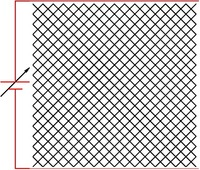
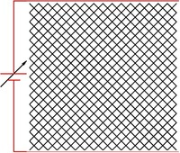

Research
Fracture, High entropy alloys, Critical phenomena, Biomaterials.

 

What makes materials tough or strong? Can we gain an understanding of the basic design principles that lead to better mechanical performance of materials and use it to design better materials? The goal of end-to-end computational design of materials is beyond our reach at the moment, but we are making important progress in understanding larger and larger chunks of the puzzle. In my work I try to understand why certain materials behave the way they do when they are subjected to mechanical loading.
I am a Miller Fellow at UC Berkeley. My current research is on fracture and deformation mechanisms in high entropy alloys and biological materials. In the past I have worked on statistical models of fracture, shape memory alloys, and nonlinear dynamics and control systems. I am interested in all things science and technology. I think about social issues and would like to learn something about economics and something about robotics.